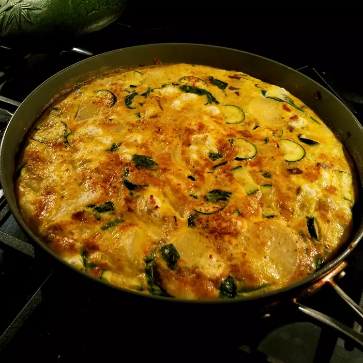

Leek Frittata

Description
This recipe is simple, it uses a cast iron skillet, eggs, leeks, and a hard cheese such as grana padano to
create a warm, savory breakfast.
Perfect for winter and fall!
Ingredients
- 4-5 Eggs
- 1/2 cup grated grana padano
- 1 leek, chopped
- 1 tsp salt
- 1 tsp black pepper
Steps
- Preheat oven to 350 F
- Heat cast iron skillet over medium heat, place about 2 Tbsp of butter and melt
- In a medium bowl, beat the eggs, add 1/4 cup of the grated cheese, add salt and black pepper
- Once the butter is melted, add the chopped leeks to the pan and cook until translucent and soft
- After the leeks are cooked, add in the egg mixture and stir to distribute leeks throughout the eggs
- Spread remaining cheese over the top of the mixture, and place in the oven
- Cook for 15-20 minutes, or until golden-brown on top